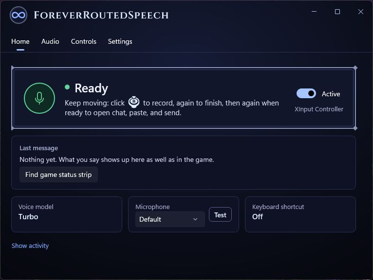
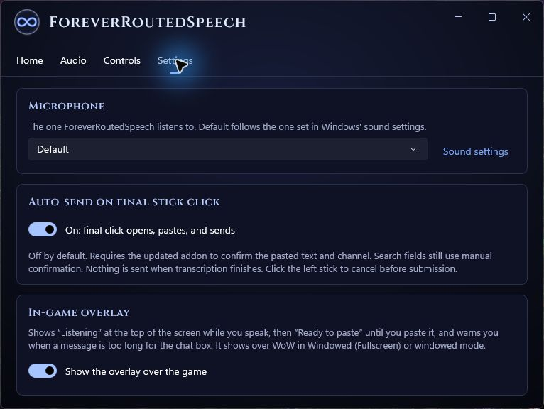
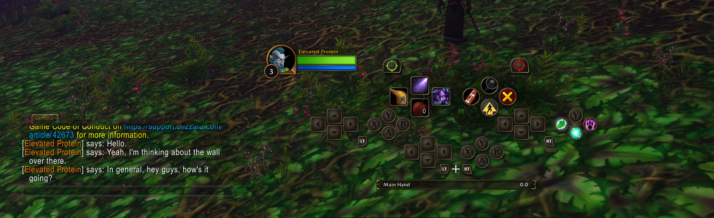

01 / WINDOWS APP
Everything in one download.
Whisper Turbo, the routing model, and required runtimes are included. No account, API key, or model selection.
Download Windows app ↓Say what you want to say. Whisper Turbo turns it into text, local routing chooses the audience, and your controller handles the rest.
Whisper Turbo, the routing model, and required runtimes are included. No account, API key, or model selection.
Download Windows app ↓The tiny VoiceRouter addon shares your current channels, group, and focused chat field with the app through an on-screen status strip.
Download addon ↓Start.cmd. Allow the Microsoft runtime installer if needed.VoiceRouter folder into your game's Interface/AddOns folder. For the current beta, that is typically World of Warcraft/_classic_beta_/Interface/AddOns.Earlier preview screenshots: the companion, Settings and a Say chat test. The current source has removed capture setup and auto-send. Click a screenshot to view it at full size.



Click the right stick and speak.
Pause or click again. Keep moving while it transcribes.
When Ready, open chat using WoW’s native controller command. The current development build pastes automatically.
Review, then confirm with the game's send button.
Left-stick click cancels. Current source uses manual A confirmation. Transcription completion alone never pastes or sends.
The first two right-stick clicks capture your voice and finish the recording. Whisper turns that recording into text locally.
An explicit channel instruction wins. fastText suggests intent from text; the addon reads live game context and resolves joined channels and group defaults.
In current source, opening native chat with a ready draft requests paste. In an already focused search field, RS requests paste. Press A to confirm yourself.
You say: “In General, anyone up for Deadmines?”
Prepared chat: /1 anyone up for Deadmines?
Start with an instruction: “In General, hey everyone,” “In Trade, selling linen,” or “Tell guild, I am ready.” The routing instruction is removed and the message stays yours. Joined channels use their current number, so renumbering does not quietly change the audience. Current source supports model suggestions too; explicit instructions take priority.
An already focused empty search field receives plain speech in current source. Smaller native field limits can cause a mismatch; shorten the draft. Search submission stays manual. See the controller acceptance guide.
No. Normal recognition and routing run locally. The app does not retain audio or transcript history by default. Synthetic or voluntarily recorded test clips are separate.
This is an independent, unsigned preview, forked from samsbase/SpeakForever. Windows may block unsigned builds; the project does not ask you to disable security protections. Blizzard approval is unverified, and API compatibility is still being tested. You can inspect the actual test results before installing.